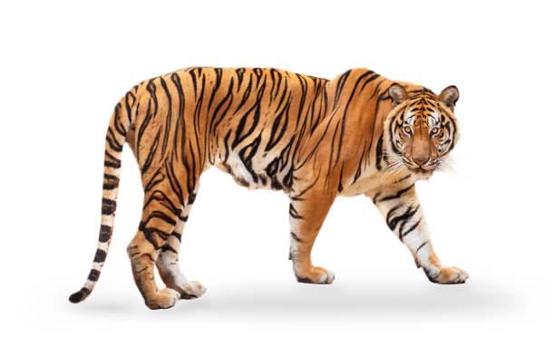
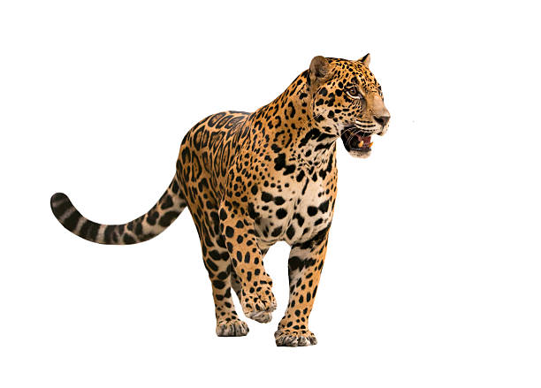
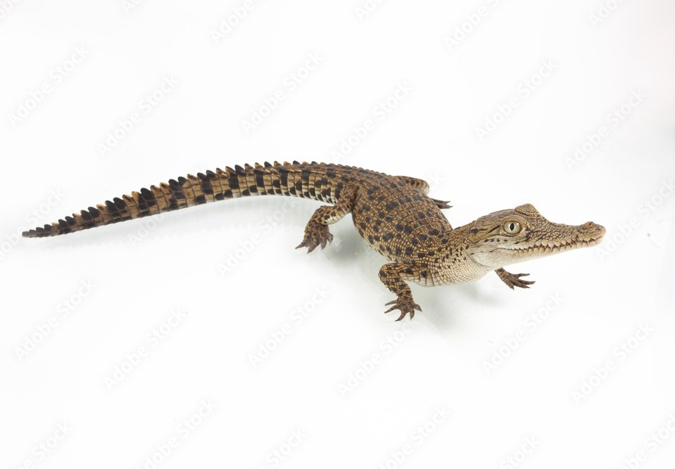

Asia
- 1. Tiger 
- 2. Elephant
- 3. Crocodile
- 4. King Cobra
- 5. Scorpion
The tiger is often considered to be the most dangerous animal in Asia due to its size, strength, and predatory instincts. This magnificent feline is found across much of the continent, from the dense forests of India and Nepal to the grasslands of Russia and China.
Tigers are apex predators, which means that they are at the top of the food chain and have no natural predators. They are carnivorous and primarily hunt large ungulates such as deer, wild boar, and buffalo, but will also prey on smaller animals such as monkeys, birds, and fish. Tigers are known for their strength and agility, and can take down prey that is much larger than themselves with ease.
In addition to their physical prowess, tigers are also highly territorial and will defend their home range fiercely against intruders. This can lead to conflicts with humans who encroach on tiger habitat or who accidentally stumble into their territory. Tigers are known to attack humans if they feel threatened, which is why they are considered to be one of the most dangerous animals in Asia.
The elephant is often considered to be the second most dangerous animal in Asia after the tiger. These magnificent creatures are known for their intelligence, size, and power, which can make them a formidable force to be reckoned with. While elephants are generally peaceful creatures, there are several reasons why they can be dangerous to humans.
Firstly, elephants are incredibly strong and can weigh up to several tons. This means that if they feel threatened, they can easily trample and injure humans or other animals. Elephants are also known to be protective of their young, and will fiercely defend them against any perceived threat.
Secondly, elephants are intelligent creatures with a complex social hierarchy. They can become easily agitated and aggressive if they feel their territory or family is being threatened. Elephants are also known to have a long memory and can hold grudges against humans who have mistreated them in the past, which can make them unpredictable and potentially dangerous.
The crocodile is often regarded as one of the most dangerous animals in Asia, and for good reason. These prehistoric creatures are found in many rivers and swamps across the continent and are known for their powerful jaws and aggressive behavior. While attacks on humans are relatively rare, there are several reasons why crocodiles can be dangerous.
Firstly, crocodiles are apex predators and have been known to attack and kill humans who stray too close to their territory. They are opportunistic hunters and will prey on anything from small fish to large mammals, including humans. Crocodiles are also known for their stealth and can hide underwater for long periods, making them difficult to spot.
Secondly, crocodiles are cold-blooded creatures that require warmth to regulate their body temperature. This means that they are often found basking in the sun on riverbanks or floating in the water. Humans who unknowingly get too close to a crocodile can easily become a target, as the crocodile can lunge out of the water with incredible speed and force.
The king cobra is one of the most venomous snakes in the world and is often regarded as one of the most dangerous animals in Asia. These majestic creatures are found in many parts of the continent, from the dense jungles of India to the lush forests of Southeast Asia. While king cobras generally avoid humans, there are several reasons why they can be dangerous.
Firstly, king cobras are highly venomous and can deliver a potent dose of neurotoxin with a single bite. Their venom is strong enough to kill an adult human in less than an hour, making them a serious threat to anyone who encounters them. King cobras are also known for their ability to stand upright and expand their hoods, making them a fearsome sight to behold.
Secondly, king cobras are also aggressive snakes and will not hesitate to defend themselves if they feel threatened. They can strike with incredible speed and accuracy, making them difficult to avoid. King cobras are also known to be territorial and will defend their territory against intruders, including humans.
The scorpion is a venomous arachnid found in many parts of Asia and is often regarded as one of the most dangerous animals in the region. These creatures are known for their sharp claws and stingers, which they use to catch prey and defend themselves against predators. While scorpions are generally not aggressive towards humans, there are several reasons why they can be dangerous.
Firstly, scorpions have a venomous sting that can cause pain, swelling, and even death in some cases. While the severity of the sting can vary depending on the species, some scorpions in Asia, such as the Indian red scorpion, are known to be particularly venomous and can be deadly.
Secondly, scorpions are nocturnal creatures that are often found hiding in dark crevices or under rocks during the day. This makes them difficult to spot and easy to accidentally disturb. If a scorpion feels threatened, it may sting in self-defense, which can be dangerous for humans.
Africa
- 1. Lion
- 2. Hippopotamus
- 3. Crocodile
- 4. Black Mamba
- 5. African Elephant
The lion is often regarded as the most dangerous animal in Africa, and for good reason. These majestic predators are known for their strength, speed, and deadly hunting tactics, making them a formidable force in the African wilderness. While lion attacks on humans are relatively rare, there are several reasons why lions can be dangerous.
Firstly, lions are apex predators and are at the top of the food chain in their habitat. They are skilled hunters and have been known to prey on everything from small mammals to large ungulates such as wildebeest and zebras. Humans who stray too close to lion territory may be perceived as a potential threat or prey, and may be attacked.
Secondly, lion attacks on humans have been on the rise in recent years due to human encroachment on lion territory. As human populations expand, lions are forced to compete for resources and may come into conflict with humans. This has led to more incidents where humans have been attacked or killed by lions.
The hippopotamus, or "hippo" for short, is one of the largest and most dangerous animals in Africa. Despite their docile appearance, hippos are aggressive creatures and are responsible for more human deaths in Africa than any other large animal, except for the lion. There are several reasons why hippos can be dangerous.
Firstly, hippos are territorial animals and will fiercely defend their territory against intruders, including humans. They are known for their aggressive behavior and are capable of moving quickly both on land and in water. This makes it difficult for humans to escape if they come into contact with a hippo.
Secondly, hippos have incredibly powerful jaws and sharp teeth, which they use to defend themselves against predators and competitors. If a hippo feels threatened or cornered, it may attack with deadly force. Hippos are also known for their ability to capsize boats and canoes, which can be dangerous for humans who are on the water.
Crocodiles are one of the most fearsome predators in Africa and are widely considered to be the third most dangerous animal on the continent. They are found throughout Africa in rivers, lakes, and swamps, and can grow up to six meters in length. Here are some reasons why crocodiles can be dangerous:
Firstly, crocodiles are ambush predators and are known for their stealthy hunting tactics. They often lie in wait underwater or partially submerged, waiting for unsuspecting prey to come close. If a human enters the water, they may be perceived as prey and attacked.
Secondly, crocodiles have powerful jaws and sharp teeth, which they use to kill and dismember their prey. If a human is attacked by a crocodile, they may be dragged underwater and drowned or dismembered. This can result in fatal injuries.
The black mamba is one of the most venomous snakes in the world and is considered to be the fourth most dangerous animal in Africa. These deadly snakes are found throughout sub-Saharan Africa and are known for their aggressive behavior and deadly venom. Here are some reasons why black mambas can be dangerous:
Firstly, black mambas are highly venomous and their venom can be fatal to humans. They inject a potent neurotoxin that can cause paralysis and death within a matter of hours. If a human is bitten by a black mamba, they must seek medical attention immediately to receive antivenom treatment.
Secondly, black mambas are fast and agile snakes and can move quickly over great distances. This makes it difficult for humans to escape if they come into contact with a black mamba. The venom of a black mamba can also cause paralysis, which can make it difficult for a human to move or seek help.
The African elephant is the largest land animal in the world and is considered to be the fifth most dangerous animal in Africa. While they are known for their gentle nature and intelligence, elephants can become aggressive and dangerous in certain situations. Here are some reasons why African elephants can be dangerous:
Firstly, elephants are highly territorial and protective of their young. If they feel threatened or perceive a human or animal as a threat to their offspring, they may become aggressive and attack. African elephants are known for their strength and can easily injure or kill a human with their powerful tusks and trunks.
Secondly, elephants have poor eyesight and rely on their sense of smell and hearing to detect potential threats. If a human or animal surprises an elephant, they may feel threatened and attack in self-defense. This can happen if humans approach elephants too closely or if they accidentally stumble upon a herd.
North America
- 1. Grizzly Bear
- 2. Rattlesnake
- 3. Cougar
- 4. Wolverine
- 5. Moose
The grizzly bear, also known as the North American brown bear, is considered to be the most dangerous animal in North America. These powerful bears are found in the forests, mountains, and tundra regions of Alaska and western Canada and are known for their aggressive behavior and formidable size. Here are some reasons why grizzly bears can be dangerous:
Firstly, grizzly bears are large and powerful predators that can weigh up to 600 kg (1,300 lbs) and stand over 2 meters (6.5 feet) tall. They have sharp claws and teeth that can inflict serious injury or death to humans. If they feel threatened or perceive a human or animal as a threat, they may attack with little warning.
Secondly, grizzly bears are highly territorial and protective of their food sources. They are known to aggressively defend their hunting grounds and food caches, which can lead to dangerous encounters with humans. Grizzly bears have an acute sense of smell and can detect food from miles away, which can bring them into close proximity to humans and increase the risk of attacks.
The rattlesnake is considered to be the second most dangerous animal in North America, after the grizzly bear. These venomous snakes are found in a variety of habitats, including deserts, grasslands, and forests, and are known for their distinctive rattle, which warns potential predators of their presence. Here are some reasons why rattlesnakes can be dangerous:
Firstly, rattlesnakes are venomous and their bites can cause serious injury or death to humans. They use their venom to immobilize their prey and can strike quickly and accurately when they feel threatened or provoked. Rattlesnake bites can cause swelling, pain, and tissue damage, and can also lead to respiratory failure or cardiac arrest in severe cases.
Secondly, rattlesnakes are often found in areas where humans may come into contact with them, such as hiking trails, camping areas, and residential neighborhoods. They are known to be more active in the spring and fall, and are more likely to be encountered during these times. If humans accidentally step on or disturb a rattlesnake, they may feel threatened and attack in self-defense.
The cougar, also known as the mountain lion or puma, is considered to be the third most dangerous animal in North America, after the grizzly bear and the rattlesnake. These large cats are found throughout the western United States and Canada, as well as parts of South America. Here are some reasons why cougars can be dangerous:
Firstly, cougars are skilled hunters and are capable of taking down prey much larger than themselves. This includes deer, elk, and even domestic livestock in some cases. However, if their natural prey is scarce, cougars may turn to hunting humans as an alternative food source. While such attacks are rare, they can be deadly, and cougars have been known to stalk and ambush their prey from behind.
Secondly, cougars are known to be territorial animals and will defend their home ranges against other cougars or perceived threats. This includes humans who may unknowingly enter their territory. Cougars may view humans as potential competitors for resources, and may attack if they feel threatened or cornered.
The wolverine is a fierce and solitary predator that is found in the northern reaches of North America. While they are not known for attacking humans, wolverines are still considered to be one of the most dangerous animals in North America due to their aggressive nature and their ability to take down prey much larger than themselves. Here are some reasons why wolverines can be dangerous:
Firstly, wolverines are known for their strength and ferocity. They are capable of taking down animals much larger than themselves, such as caribou and moose, and will fiercely defend their kills against other predators. In addition, wolverines are also known for their boldness and may attack humans if they feel threatened or cornered.
Secondly, wolverines have very powerful jaws and sharp teeth, which they use to rip through tough animal hides and bones. They are also known for their razor-sharp claws, which they use to climb trees and dig dens. These physical attributes make them formidable predators and dangerous adversaries.
The moose is a large and powerful animal that is found throughout North America. While they are generally peaceful herbivores, they can become extremely dangerous if they feel threatened or cornered. Here are some reasons why moose can be dangerous:
Firstly, moose are large and heavy animals, with adult males weighing up to 1500 pounds. They can be extremely aggressive during mating season and will attack anything that they perceive as a threat to their territory or their mates. In addition, moose are known to charge at humans or vehicles without warning, especially if they feel cornered or harassed.
Secondly, moose have very powerful legs and sharp hooves, which they use to defend themselves against predators or perceived threats. A moose can easily kick or stomp a human or predator to death, making them a formidable opponent in close quarters.
South America
- 1. Jaguar 
- 2. Anaconda
- 3. Piranha
- 4. Golden Poison Frog
- 5. Red-Bellied Piranha
The jaguar, also known as the "king of the jungle" in South America, is considered to be one of the most dangerous animals on the continent. Here are some reasons why:
Firstly, the jaguar is a powerful predator that is capable of taking down large prey such as deer, wild boar, and even caimans. Their strong jaws and sharp claws enable them to kill quickly and efficiently. They are also known for their stealth and agility, which allows them to ambush their prey without warning.
Secondly, the jaguar is a territorial animal that will fiercely defend its territory against any perceived threats, including humans. Encounters between humans and jaguars can be dangerous, especially if the animal feels cornered or threatened. Jaguars have been known to attack humans, and in some cases, the attacks have been fatal.
The anaconda, also known as the green anaconda, is one of the largest and most powerful snakes in the world. Found mainly in the rainforests of South America, these giant reptiles can grow up to 30 feet long and weigh over 500 pounds. Here are some reasons why the anaconda is considered to be one of the most dangerous animals in South America:
Firstly, anacondas are constrictors, which means they kill their prey by wrapping their muscular bodies around them and squeezing until they suffocate. They are known to prey on a variety of animals, including fish, birds, rodents, and even large mammals like deer and jaguars. While they do not typically target humans as prey, there have been cases where people have been attacked and killed by anacondas.
Secondly, anacondas are ambush predators that are capable of striking quickly and with great force. They have powerful jaws and sharp teeth that enable them to grip their prey and hold on while they constrict. Their large size and strength make them difficult to escape from once they have latched onto their prey.
Piranhas are a group of freshwater fish species found in South America, known for their sharp teeth and fierce reputation. They are considered the third most dangerous animal in South America due to their predatory behavior and potential to attack humans and other animals. Here are some reasons why piranhas are considered dangerous:
Firstly, piranhas are carnivorous and have a strong jaw filled with sharp teeth. They hunt in groups and are known to attack large prey, such as other fish, mammals, and even humans. Although piranhas typically feed on dead or injured animals, they can become aggressive if they feel threatened or if there is a shortage of food.
Secondly, piranhas are able to detect blood in the water from a distance, which can trigger a feeding frenzy. When piranhas are in a feeding frenzy, they attack anything that moves, including other fish and even humans. This can be especially dangerous for humans who are swimming or fishing in areas where piranhas are present.
The Golden Poison Frog, also known as the Golden Dart Frog, is considered one of the most poisonous animals in the world, and the fourth most dangerous animal in South America. Here are some reasons why this brightly colored amphibian is so dangerous:
Firstly, the Golden Poison Frog is toxic to the touch. It secretes a potent poison called batrachotoxin, which is found in its skin. This poison is so potent that just a few micrograms of it can kill a human. The frog's bright coloration serves as a warning to predators that it is toxic and should not be eaten.
Secondly, the Golden Poison Frog is endemic to the rainforests of Colombia, which makes it difficult to obtain and study. However, it is believed that the frog obtains its poison from the insects it eats, such as beetles and ants. The poison is stored in the skin glands and is used as a defense mechanism against predators.
The Red-bellied Piranha is a species of freshwater fish found in the rivers and streams of South America, and is known as the fifth most dangerous animal in the region. Here are some reasons why this small but fierce fish is considered a threat to humans and other animals:
Firstly, Red-bellied Piranhas are carnivorous predators that have razor-sharp teeth and powerful jaws. They hunt in groups, or shoals, and are known to attack prey that is much larger than themselves. While they typically feed on other fish and invertebrates, they have been known to attack humans who venture into the water.
Secondly, the Red-bellied Piranha is able to detect blood in the water from great distances. This means that if a human or animal is bleeding, even from a small cut, they can become the target of a piranha attack. While these attacks are rare, they have been known to occur in areas where humans and piranhas coexist.
Europe
- Brown Bear
- Asp Viper
- Wasp
- European Bison
- Wolverine
The brown bear is considered the most dangerous animal in Europe due to its size, strength, and predatory behavior. These large and powerful animals are found throughout Europe, including in Russia, Scandinavia, and the Balkans. Here are some reasons why the brown bear is considered the most dangerous animal in Europe:
Firstly, brown bears are apex predators, meaning they sit at the top of the food chain and have no natural predators. They are powerful and fast, with sharp teeth and claws that are capable of killing prey or defending against threats. When brown bears feel threatened, they can become aggressive and attack, which can be especially dangerous for humans who may accidentally come into contact with them.
Secondly, brown bears are known to be opportunistic feeders, which means they will eat anything they can find, including small animals, fish, berries, and even garbage. This can lead to conflicts with humans who may be living or camping in bear habitat. Brown bears have been known to attack humans who get too close to their food sources or who enter their territory.
The asp viper is a venomous snake species found in Europe, and it is considered the second most dangerous animal in the continent after the brown bear. Here are some reasons why the asp viper is considered so dangerous:
Firstly, the venom of the asp viper is highly toxic and can cause a range of severe symptoms in humans, including swelling, pain, and in some cases, death. The venom is especially dangerous to children, the elderly, and those with weakened immune systems. The asp viper is known for its fast-acting venom, which can cause rapid deterioration of the victim's health.
Secondly, the asp viper is a relatively common snake in Europe, found in a wide range of habitats, from forests to grasslands. They are known to be aggressive when threatened and can strike quickly, making them a serious danger to humans who come into contact with them. The asp viper's coloration and camouflage can make it difficult to spot, and they are known to be active during the day and at night.
While most people might not think of wasps as dangerous animals, they can certainly pose a threat to humans. In fact, the wasp is considered the third most dangerous animal in Europe, and for good reason.
The main danger of wasps comes from their stingers. Unlike bees, which can only sting once before they die, wasps can sting multiple times, making them much more aggressive. Their stings are also more painful and can cause an allergic reaction in some people, which can be life-threatening.
In addition to their stings, wasps can also be dangerous because of their nests. If a nest is disturbed or threatened, the wasps will swarm and attack in defense. This can be especially dangerous if the nest is located near human dwellings or in public areas. It is important to take precautions and seek professional help to safely remove any wasp nests to avoid potential harm.
The European bison, also known as the wisent, is the largest land mammal in Europe and is listed as the fourth most dangerous animal in the continent. While these animals are not typically aggressive towards humans, they can be dangerous if provoked or if they feel threatened.
One of the main reasons why the European bison can be dangerous is due to their size and strength. Males can weigh up to 1,000 kilograms and stand up to two meters tall, making them difficult to control if they become agitated. They are also known for their sharp horns, which they can use to defend themselves or their young.
Another factor that can make European bison dangerous is their unpredictable behavior. While they are generally peaceful animals, they can become easily agitated if they feel threatened or if their personal space is invaded. This can be dangerous for hikers or individuals who come across these animals in the wild.
The wolverine, also known as the glutton or carcajou, is a carnivorous mammal native to northern Europe and is considered the fifth most dangerous animal on the continent. While they are not typically aggressive towards humans, they are known to be highly territorial animals and will fiercely defend their territory if they feel threatened.
One of the main reasons why wolverines can be dangerous is due to their strength and aggressiveness. They are known for their powerful jaws and sharp teeth, which they can use to defend themselves against predators or perceived threats. Wolverines are also highly adaptable and resourceful, which can make them dangerous if they become a nuisance to humans.
Another factor that can make wolverines dangerous is their unpredictability. While they are generally solitary animals, they can become highly aggressive if they feel threatened or if their territory is invaded. This can be dangerous for hikers or individuals who come across these animals in the wild.
Australia
- Saltwater Crocodile 
- Box Jellyfish
- Eastern Brown Snake
- Blue-Ringed Octopus
- Stonefish